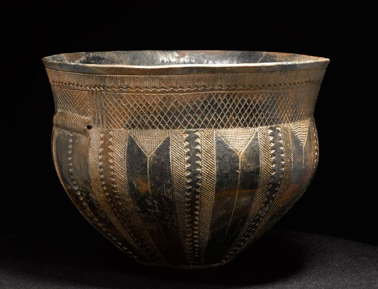

5.1 – INDLEDNING
sidde 144
Kapitel 5 Dansk kulturliv
I Danmark hører kultur og hverdagsliv sammen. Byerne, landskabet, skolerne, teknologien, videnskaben, kunsten og de måder, danskere møder hinanden på, er blevet til igennem en lang kulturhistorie. Dansk kultur har rødder tilbage til den tid, da de første mennesker slog sig ned her. Man kan stadig gøre fund af smykker og brugsgenstande fra de ældste tider og fornemme det liv, der engang blev levet i Danmark.
I landskabet ser vi spor af de ældste tiders gravhøje og store fæstningsanlæg. Kongernes og adelens kultur springer også i øjnene med slotte og herregårde overalt i Danmark. De brede befolkningslags liv og hverdag har gennem mange århundrede også præget landets kultur. Deres arbejde har formet landskabet og kulturen og omgangsformerne på arbejdspladser i Danmark.
I nyere tid, da velfærdsstaten for alvor udviklede sig i anden halvdel af 1900tallet, blev det anset for vigtigt at styrke kulturlivet, videnskaben og kunsten. Et aktivt kulturliv blev betragtet som forudsætningen for det enkelte menneskes trivsel og velbefindende. Kunst og kultur blev set som demokratiets grundlag, og kunsten måtte gerne provokere og stille spørgsmål ved vedtagne sandheder. Selv om det ikke er alle, der ofte går i teateret eller læser mange bøger, skaber kunst og kultur et samfundsliv, der gavner hele befolkningen.
Læremateriale Til Indfødsretsprøven
sidde 145
Velfærdsstaten har derfor fremmet kulturlivet og dermed også været med til at gøre Danmark internationalt kendt inden for flere kunstarter.
I dette kapitel gives et overblik over dansk kulturliv.
Det er ikke alle vigtige kunstnere, der bliver nævnt, men kapitlet gennemgår forskellige aspekter af historien om kulturlivet i Danmark inden for følgende områder:
• Litteratur. • Billedkunst og skulptur. • Musik. • Arkitektur og design. • Scenekunst. • Film.Den danske kunsthistorie har spor helt tilbage til stenalderen. Her keramik i form af det såkaldte 'Skarpsalling-kar', som blev lavet cirka 3.200 år før Kristus. Foto: Roberto Fortuna og Kira Ursem, Nationalmuseet.
Den danske kunsthistorie har spor helt tilbage til stenalderen. Her keramik i form af det såkaldte 'Skarpsalling-kar', som blev lavet cirka 3.200 år før Kristus. Foto: Roberto Fortuna og Kira Ursem, Nationalmuseet.
Læremateriale Til Indfødsretsprøven

Fonte: Læremateriale til Indfødsretsprøven, SIRI.